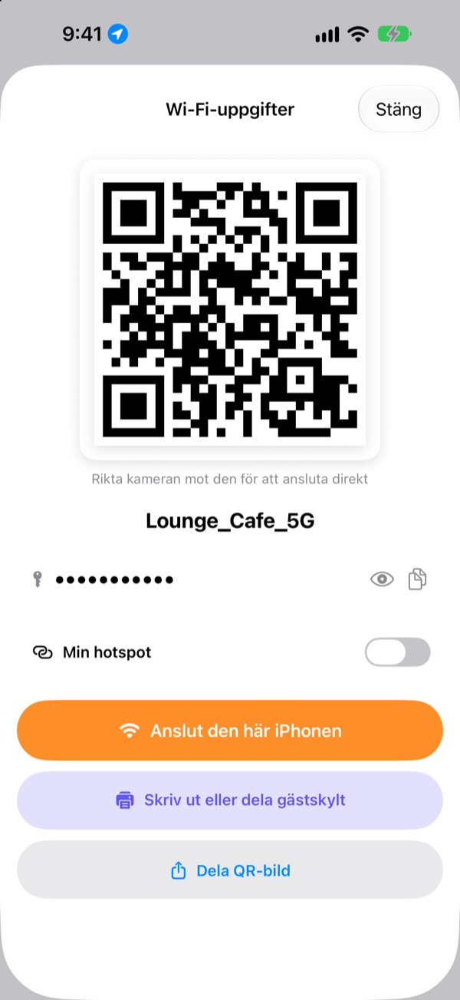
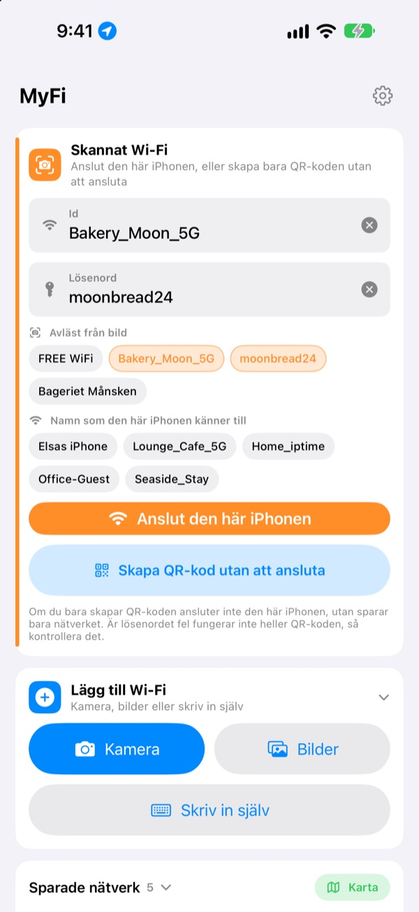
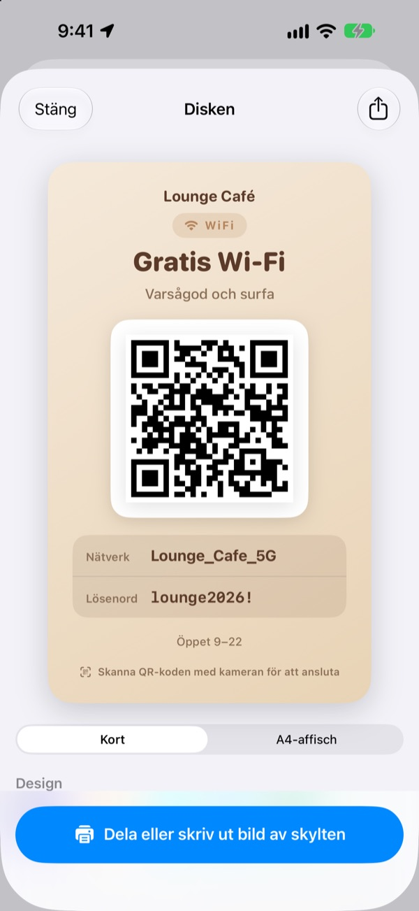
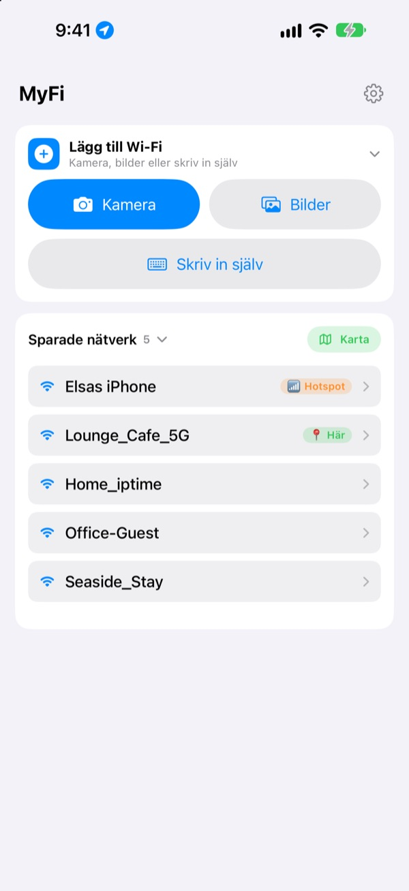

Sluta läsa upp lösenordet.
Visa en QR-kod.
Vänner riktar bara kameran mot den och är uppkopplade. Skylten på kaféets vägg? En bild så ansluter den här iPhonen. Inga fler skrivfel när du skriver av.
Alla funktioner är gratis. iPhone med iOS 17 eller senare.

Gör en QR-kod för ditt Wi-Fi
Ändra namn eller lösenord så uppdateras skylten direkt. Rikta en mobilkamera mot den så får du en riktig fråga om att ansluta.
”Vad var Wi-Fi-lösenordet nu igen?” Hur många gånger i dag?
Du läser upp det och blandar ihop stora och små bokstäver. Du skriver av skylten på väggen och förväxlar 0 och O. Sedan förklarar du allt igen. MyFi gör det till en bild och en QR-kod.
Fota så är du uppkopplad
Fota Wi-Fi-skylten eller kvittot, eller välj en bild. MyFi läser nätverksnamn och lösenord och ansluter den här iPhonen. Finns det också en QR-kod på skylten läses den först, så att uppgifterna blir exakta.
Är texten otydlig drar du bara en bit från bilden till fältet för namn eller lösenord.

Gör och skriv ut en gästskylt
Välj ett av 7 teman och lägg till namn, logotyp och rader som öppettider. Välj kort eller stående A4-affisch, spara som bild eller skriv ut direkt med AirPrint.
Ha flera skyltar, en för varje ställe eller bord, och ändra dem när du vill.

Platser du kommer tillbaka till hamnar överst
Nätverk du ansluter till eller delar sparas tillsammans med platsen. Kommer du tillbaka hamnar det nätverket överst, och alla sparade platser syns på en karta.
Lägg QR-koden till ditt mest delade Wi-Fi som widget på hemskärmen eller låsskärmen. När en gäst frågar visar du bara skärmen.

Kom igång i tre steg
- 1
Öppna appen
Den frågar om platsåtkomst en gång, eftersom iOS bara berättar namnet på ditt nuvarande Wi-Fi för appar som har det.
- 2
Fota eller skriv
Fota en skylt, eller skriv in lösenordet till ditt eget Wi-Fi en gång.
- 3
Anslut eller visa
Anslut den här iPhonen, eller visa QR-koden för den andras kamera.
Var du hittar vad
- Anslut från en bild på en skylt
Lägg till Wi-Fi, sedanKameraellerBilder, sedanAnslut den här iPhonen- Skriv in uppgifterna själv
Lägg till Wi-Fi, sedanSkriv in själv- Gör bara en QR-kod
Skapa QR-kod utan att ansluta- Skicka QR-koden i ett meddelande
- Tryck på ett sparat nätverk, sedan
Dela QR-bild - Gästskylt
- Tryck på ett sparat nätverk, sedan
Skriv ut eller dela gästskylt - Din egen hotspot som QR-kod
- Tryck på ett sparat nätverk och slå på
Min hotspot - Anslut eller dela med ett svep
- Svep åt höger i listan för att ansluta, åt vänster för att dela
- Se sparade platser
Karta, bredvidSparade nätverk- QR-kod på hemskärmen
- Håll fingret på hemskärmen och lägg till MyFi-widgeten
Wi-Fi-QR
Du kan också öppna QR-koden direkt med Siri eller appen Genvägar.
Alla funktioner är gratis
Gratis
- Anslut till Wi-Fi från en bild
- Gör QR-koder och dela dem som bild
- Gästskyltar i 7 teman, som kort eller A4-affisch, utskrift med AirPrint
- Widgetar för hemskärm och låsskärm
- Karta över dina sparade Wi-Fi
- Ingen reklam, inget konto
Dricks (frivilligt)
- Gillar du appen kan du stötta utvecklingen med dricks
- Dricks låser inte upp något. Utan dricks har du fortfarande alla funktioner
Dricks är en liten engångsbetalning.
Inga abonnemang och inga betalda funktioner.
Vanliga frågor
Varför måste jag skriva lösenordet själv?
iOS låter ingen app läsa Wi-Fi-lösenorden som sparats på enheten. Därför känner MyFi igen nätverksnamnet, och lösenordet skriver du in en gång. Sedan använder appen det sparade.
Jag ser inte namnet på mitt nuvarande Wi-Fi.
iOS ger bara Wi-Fi-namnet till appar med platsåtkomst. Tillåt MyFi under Inställningar › Integritet och säkerhet › Platstjänster. Platsen används bara för att läsa nätverksnamnet och känna igen platser du återvänder till.
Namn eller lösenord lästes fel.
Gå närmare och fota rakt. Blir det fortfarande fel, dra rätt bit från bilden till fältet eller rätta för hand. Har skylten en Wi-Fi-QR-kod läser MyFi den och fyller i exakta uppgifter.
Vilka skyltar kan den läsa?
Den klarar sig bäst med skyltar på engelska eller koreanska med etiketter som ID, PW, SSID, Network eller Password. Även utan etiketter hittar den raden som ser ut som ett lösenord. En Wi-Fi-QR-kod på skylten läses exakt oavsett språk.
Hur ansluter någon med min QR-kod?
På iPhone och Android riktar de bara den inbyggda kameran mot koden och trycker på frågan om att ansluta. Ingen app behövs.
Kan andra se mitt lösenord?
QR-koden innehåller vanliga inloggningsuppgifter för Wi-Fi. Du väljer alltid själv om du delar den, och du kan dölja lösenordet på gästskylten.
Varför kan jag inte ansluta till min egen hotspot?
Din iPhones Internetdelning är själva telefonen, och den kan inte ansluta till sig själv. Slå på Min hotspot så behandlar MyFi den som en QR-kod att dela ut.
Vart tar mina Wi-Fi-uppgifter vägen?
MyFi har ingen server. Nätverksnamn, lösenord, resultat från bilder och platser behandlas och sparas bara på din enhet. Ingen reklam eller spårning. Appen skickar bara anonym användningsstatistik och felrapporter till Apple iCloud så att den kan rättas.
Vilka enheter fungerar den på?
iPhone med iOS 17 eller senare. Appen finns på 24 språk.
Frågor eller synpunkter? Skriv till leeo@kakao.com. Jag svarar oftast inom 2 till 3 dagar.